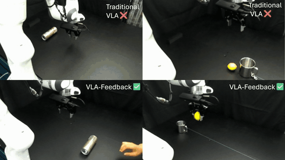

Catch Me If You Can: Real-Time Feedback Denoising for Responsive VLAs
Yiheng Ji, Xingru Zhou, Luis Sentis, Mingyo Seo
Conference on Robot Learning (CoRL), 2026
VLA-Feedback pairs low-frequency diffusion planning with high-frequency visual feedback, so each action can be corrected with the latest observation before it runs.